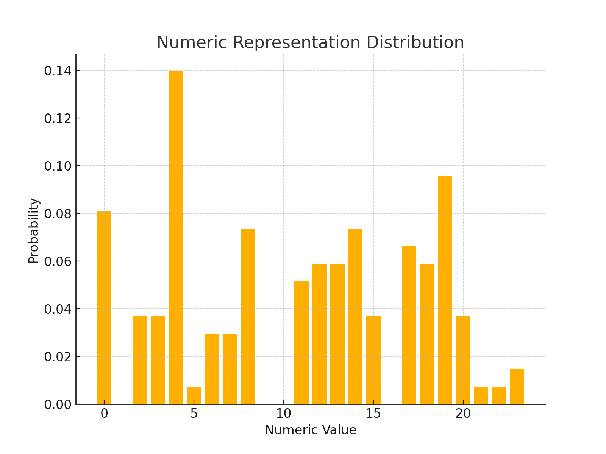
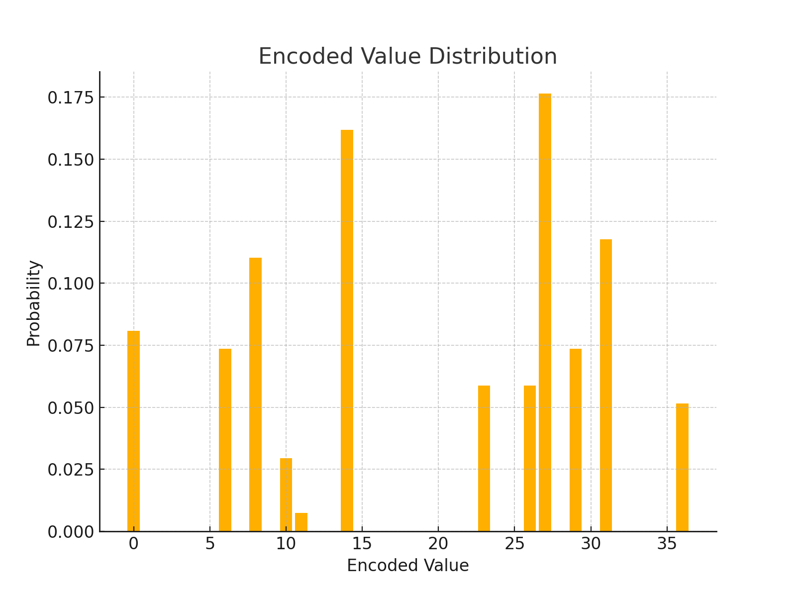

Plaintext and Ciphertext
Plaintext:
THIS IS A SIMPLE EXAMPLE TO DEMONSTRATE ENCODING STRATEGIES USING MODULAR ARITHMETIC. LET US EXPLORE HOW TO MAP EACH LETTER TO A NUMERIC VALUE AND PERFORM ENCODING.
Encoded Ciphertext:
1410312323313017201620341117231625161022112034143331053023203010143126203423343034000020341117310031232310313007003003230001402326203431223032200120111623001116231533302012200023222516113330100323
Deduction of Modulus (P) and Exponent (e)
We deduced the encryption parameters by analyzing the ciphertext and plaintext:
- Modulus (P): The encoded values range from 0 to 36, suggesting a modulus of
P = 37, the smallest prime greater than 36. - Exponent (e): By testing small values, we verified that
e = 3satisfies the formulaE = L^e mod Pfor all numeric representations.
Analysis of Distributions
Original Numeric Distribution
The numeric representation of the plaintext characters is analyzed below. Each character from the plaintext is assigned a numeric value between 0 and 25 corresponding to the alphabet.
Shannon Entropy:
The Shannon entropy of the numeric representation distribution is: 4.014
Encoded Distribution
After applying the encryption scheme, the encoded values were analyzed for their frequency distribution. The transformation modifies the original distribution due to the modular arithmetic and exponentiation.
Shannon Entropy:
The Shannon entropy of the encoded value distribution is: 3.331
Visualizing the Distributions
The following figures illustrate the distributions of the numeric representations and the encoded values:
 The Role of Statistical Analysis in Cryptography
Statistical analysis is a cornerstone for understanding the behavior and vulnerabilities of cryptographic algorithms. By examining distributions, entropy, and other properties, analysts can uncover patterns that may hint at weaknesses in encryption schemes. This understanding is critical in developing secure systems that resist attacks.
For example, frequency analysis is a classic cryptanalysis method. If a cipher does not sufficiently obscure the statistical characteristics of the plaintext, an attacker can match the ciphertext frequencies to known letter distributions in a given language, effectively breaking the cipher. The Caesar cipher and simple substitution ciphers are highly vulnerable to this kind of attack.
Modern encryption schemes, like AES and RSA, are designed to avoid statistical weaknesses. However, analyzing their output distributions can still reveal implementation flaws, such as insufficient randomness in key generation or side-channel leaks. For instance, timing attacks on RSA exploit statistical variations in encryption or decryption times to deduce private keys.
Understanding the statistical properties of cryptographic transformations is also essential in evaluating the entropy of keys and outputs. High entropy indicates unpredictability, which is a desired property of secure systems. Entropy analysis can also help identify weak key generation practices or predictable patterns in encryption outputs.
For cybersecurity professionals, mastering statistical tools is vital for analyzing cryptographic algorithms and ensuring the robustness of secure communications. These skills are increasingly important as attackers develop more sophisticated methods to exploit statistical flaws in encryption systems.